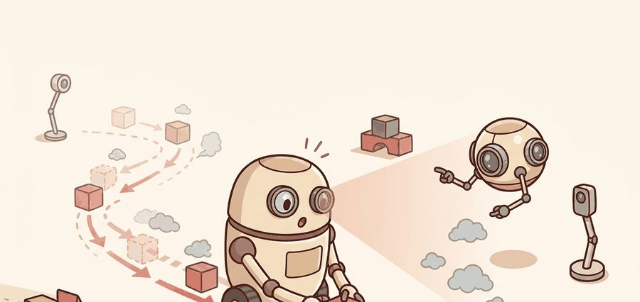
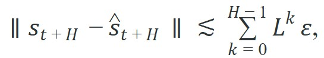
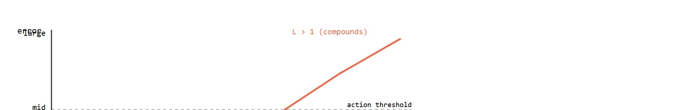

Long rollouts are persuasive until their first small bias compounds into a fake future.
A Horizon-Aware Predictor

This section assumes familiarity with forward model types and the distinction between state-space and observation-space prediction covered in section 36.2. The compounding-error perspective developed here is extended in section 36.4, which addresses uncertainty quantification as the principal tool for deciding when a rollout has drifted too far to trust. The horizon-capping strategy recurs alongside closed-loop replanning and model-predictive control (MPC), where short trusted horizons are the practical foundation for real-time deployment.
A delivery robot's world model is off by two centimeters per step. After ten imagined steps it has confidently planned a path through a wall, exactly the diverging predicted-versus-true trajectory shown in Figure 36.3A. The model was never wrong by much; it was wrong repeatedly, and each prediction fed the next. This compounding dynamic is now the central engineering constraint for any robot that plans more than a second ahead. Here you will trace how one-step error grows into long-horizon catastrophe, learn which physical events accelerate the blowup, and build the intuition for choosing a horizon short enough to trust.
Rollout horizon is a trust budget. Each extra imagined step spends more of that budget, and eventually the model starts paying for action with fiction instead of evidence.
A world model that is wrong by a little, repeatedly, is not a model of the world: it is a map of a place the robot will never reach.
If the true dynamics are $f$ and the learned model is $\hat f$, then a one-step state error of size $\varepsilon$ can grow after $H$ rollout steps roughly like

where $L$ is an effective sensitivity constant of the dynamics and controller. If $L > 1$, the planner cannot assume that a small local fit implies a good long imagined future. The diagram below plots both regimes: the safe $L < 1$ curve that stays flat against the horizon axis, and the $L > 1$ curve that climbs past the action threshold, with the trusted horizon cap marking the last step worth trusting.

For a physical robot, $L$ encodes how aggressively the body amplifies small state errors. Stiff contact forces, fast rotational dynamics in a legged gait, or high-gain joint controllers typically raise $L$ above 1, meaning a two-centimeter position error at step $k$ does not stay two centimeters at step $k+1$. It grows. A robot mid-jump, mid-grasp, or cornering at speed often operates in a regime where $L$ can spike to values of 2 or 3 for a single step, collapsing the entire remaining horizon budget in moments.
Before going further, it helps to pin down what "trusting" a horizon actually means in practice: a planner trusts horizon $H$ when it is willing to choose an action based on the model's prediction of state $H$ steps ahead. The rest of this section is about deciding how large that $H$ can safely be, given how fast $L$ inflates the one-step error $\varepsilon$.
Mechanically, $L$ is the spectral norm of the Jacobian of the composed map $(f, \pi)$ at a given state, where the Jacobian is the matrix of first derivatives describing how each output coordinate changes with each input coordinate, and its spectral norm is the largest factor by which that matrix can stretch a vector. It measures how much a unit perturbation to the current state stretches after one step of dynamics plus one step of control. A reactive controller with high feedback gain suppresses errors in isolation, but it also couples them across joints. That coupling raises the off-diagonal entries of the Jacobian and pushes $L$ upward in constrained configurations. The counterintuitive result is that a tighter, more capable controller can make long-horizon planning harder, not easier: a high-gain PD controller (a proportional-derivative controller, which corrects tracking error using a term proportional to the error itself plus a term proportional to its rate of change) tuned to track reference trajectories may push $L$ from 1.1 to 1.8 in a constrained wrist configuration, collapsing a reliable ten-step planning horizon down to three.
Think of $L$ as the angle of a hillside under a rolling snowball. When $L$ is less than 1 the slope is gentle and the snowball barely grows. When $L$ exceeds 1 the slope steepens and the snowball doubles in size with every few meters it travels. A tiny pebble that started the roll looks absurd as a cause once the snowball is the size of a car, yet that pebble set the trajectory. A one-centimeter state error under stiff contact dynamics behaves the same way: each step multiplies the mistake by $L$, so after ten steps even a value of $L = 1.2$ turns a centimeter into more than six centimeters, and a value of $L = 2$ turns it into a meter.
So far: one-step error grows by a factor of $L$ per step; $L$ is set by the Jacobian of dynamics-plus-controller and is pushed above 1 by stiff contact, fast rotation, or high feedback gain; and the resulting blow-up feels exactly like a snowball rolling down a slope whose steepness is $L$. Next, we look at what actually produces that first small error in the first place.
In practice, three mechanisms usually dominate this blow-up. First, state-estimation noise enters the first prediction, and the rollout then recycles it as if it were clean state. Second, actuator delay or rate limits make the model optimistic about how quickly the robot can correct itself. Third, contact mode switches, wheel slip, or near-singular arm poses create local dynamics far more sensitive than the average transition error suggests. That is why a model that looks excellent on one-step loss can still suffer from compounding prediction debt and rank action sequences badly after only a few imagined steps.
Longer horizon is valuable only until model bias dominates. After that point, more imagination produces less trustworthy control.
A common assumption is that minimizing one-step prediction error is sufficient to guarantee reliable long-horizon planning. This is wrong in embodied AI. A model can achieve near-zero one-step loss on training data while still accumulating catastrophic error over a rollout of five to ten steps. The problem is recycling: each predicted state feeds the next prediction, so any small systematic bias compounds multiplicatively rather than averaging out. One-step loss measures local fit. Rollout quality measures compounding stability. These are distinct properties. Evaluate a model at the horizons it will actually be used for, not just at the one-step level.
Having argued that recycled bias compounds multiplicatively, the fastest way to feel it is to watch a single tiny error drift across a handful of steps. The next probe logs how a small underestimation of acceleration error drifts over five rollout steps. The pattern is simple enough to inspect by eye, which is exactly what a first debugging panel should allow.
# Roll out a biased model and compare cumulative error by horizon.
true_pos = 0.0
true_vel = 1.0
model_pos = 0.0
model_vel = 0.98
dt = 0.1
horizon_error = []
for step in range(1, 6):
true_pos += true_vel * dt
model_pos += model_vel * dt
horizon_error.append(round(true_pos - model_pos, 4))
true_vel *= 0.99
model_vel *= 0.97
print({"horizon_error": horizon_error, "final_error": horizon_error[-1]}){'horizon_error': [0.002, 0.0049, 0.0086, 0.013, 0.0181], 'final_error': 0.0181}
Read the horizon-error list as a compounding signal: each entry is larger than the last because the model's velocity underestimate accumulates step by step. The final error is roughly nine times the one-step error, which is exactly the drift pattern that makes long-horizon planning unreliable even when the one-step fit looks acceptable.
Trace the bound $\lVert s_{t+H} - \hat s_{t+H} \rVert \lesssim \sum_{k=0}^{H-1} L^k \varepsilon$ with concrete numbers. Take a one-step error $\varepsilon = 1$ cm and a sensitivity constant $L = 1.5$ (a stiff-contact regime). The accumulated error is the running geometric sum:
Step 1: $L^0 \varepsilon = 1 \cdot 1 = 1.0$ cm, running total $= 1.0$ cm.
Step 2: add $L^1 \varepsilon = 1.5 \cdot 1 = 1.5$ cm, running total $= 2.5$ cm.
Step 3: add $L^2 \varepsilon = 2.25 \cdot 1 = 2.25$ cm, running total $= 4.75$ cm.
Step 4: add $L^3 \varepsilon = 3.375 \cdot 1 = 3.375$ cm, running total $= 8.125$ cm.
Step 5: add $L^4 \varepsilon = 5.0625 \cdot 1 = 5.0625$ cm, running total $= 13.19$ cm.
A one-centimeter mistake becomes a 13-centimeter mistake after only five steps. Now repeat with a benign $L = 0.8$: the running totals are 1.0, 1.8, 2.44, 2.95, and 3.36 cm, converging toward $\varepsilon / (1 - L) = 5$ cm and never exceeding it. Same starting error, opposite fate: the single value of $L$ relative to 1 decides whether the horizon is a budget you can spend or a debt that explodes.
In production, save horizon-conditioned metrics explicitly. A single scalar MSE hides whether the model is excellent at one to three steps and unusable after ten, which is often the real control-relevant story. In PyTorch or JAX training loops, log per-horizon error tables and sequence-ranking accuracy alongside loss. In mujoco_mpc, Isaac Lab, or Drake rollouts, log whether the same horizon cap preserves closed-loop success under the same seed panel.
Horizon-conditioned metrics tell you a rollout went bad, not where. To fix it, look at the trajectory. The first useful artifact is not another scalar plot but an overlay of real and imagined trajectories, aligned by time, with the first meaningful divergence marked. On a manipulator that marker is usually the first contact frame where normal force or slip onset differs; on a drone, the first step where unmodeled drag or attitude lag changes the commanded recovery. A good debugging ledger stores the horizon at which divergence becomes decision-relevant, not merely numerically visible.
Tool support matters here. wandb or TensorBoard can store horizon-tagged traces, but the deeper point is methodological: keep the rollout panel fixed while comparing horizon caps, model versions, and controller variants. If the panel changes, the claim about horizon trust stops being defensible.
When using MBPO (Model-Based Policy Optimization) or any short-branched rollout scheme, set the rollout_length schedule to ramp up gradually during training rather than holding it fixed at the maximum from the start. In the reference MBPO implementation, rollout_schedule takes a list of (epoch, length) pairs; starting at length 1 and stepping up by 1 every few epochs keeps early training stable, because the dynamics model has not yet accumulated enough coverage to justify longer horizons. A common gotcha is setting rollout_length=5 from epoch zero: the model visits out-of-distribution states immediately, inflates the replay buffer with fictitious transitions, and policy loss spikes in a way that looks identical to a hyperparameter problem rather than a horizon-trust problem.
Error accumulation becomes catastrophic in three specific situations that are easy to miss during offline evaluation. First, near contact transitions: a manipulator model trained mostly on free-space data underestimates stiffness after first touch, so a three-step rollout that crosses a contact boundary can report a physically impossible arm pose with low predicted error. Second, at high-speed locomotion gaits where foot-contact duration is a single timestep: one missed liftoff in the imagined rollout sends velocity predictions into divergence within four to six steps. Third, after distributional shift caused by policy improvement: the updated policy visits states the dynamics model was never trained on, so horizon trust drops sharply mid-training even if one-step loss has not changed. In each case the symptom is a planner that scores its own rollouts confidently while the real robot fails immediately on execution.
Fit one-step transitions first, evaluate multi-step rollouts on held-out episodes, then cap planner horizon where task performance still improves. If longer horizons help only on paper, shorten the rollout and rely more on feedback or terminal values.
Do not compare a short-rollout method and a long-rollout method using metrics produced by different seed panels or different reset logic. Horizon claims are extremely sensitive to data support and termination conditions.
A highway-driving planner may want a multi-second horizon in free space, but a manipulator inserting a connector often trusts only a few contact-relevant steps before replanning. The correct horizon is the one that keeps model bias below the action-threshold the robot cares about.
Waymo's behavior-prediction stack caps the trajectory-forecast horizon at roughly eight seconds precisely because compounding error makes longer agent-motion rollouts unreliable for planning. The system replans at high frequency rather than trusting one long forecast, so a small misprediction of a neighboring vehicle's intent is corrected by fresh sensor evidence before it compounds into an unsafe maneuver. This is horizon-as-trust-budget applied at scale on public roads.
Goal: Empirically locate the horizon at which a learned dynamics model stops being trustworthy, and watch how the sensitivity constant $L$ controls that cliff.
Tools needed: Python, gymnasium (the Pendulum-v1 environment), numpy, a small PyTorch MLP, and matplotlib. Budget 15 to 30 minutes.
Steps: Collect a few thousand $(s, a, s')$ transitions from a random policy. Train a one-step MLP dynamics model $\hat f(s, a)$ to near-zero one-step validation loss. Then, from held-out start states, roll the model forward autoregressively (feed each prediction back as the next input) for horizons $H = 1, 2, 5, 10, 20$, and record the mean Euclidean error against the true environment rollout at each horizon.
What to vary: (1) the training-data size, to see how more coverage pushes the cliff outward; (2) the action regime, comparing a gentle policy against an aggressive one that drives the pendulum through its fast-swing region where the effective $L$ spikes above 1.
What to observe: Plot error versus horizon on a log y-axis. You should see a near-flat region followed by a knee where error climbs roughly geometrically. Confirm that the aggressive action regime moves the knee to a shorter horizon, the empirical signature of a larger $L$, and decide the horizon cap you would actually trust for planning.
This section reinforces the rollout caution that appears in Section 37.4 on imagination rollouts and complements the stability discussion in Chapter 7.
Scale of the problem: Practitioner surveys of sim-to-real transfer failures in manipulation have repeatedly pointed to horizon-induced error accumulation as one of the largest single causes of failure, in some reports outweighing any individual perception or control bug; exact percentages vary by benchmark and are not settled science. The engineering response has moved in three directions simultaneously.
Diffusion-based world models for long-horizon prediction. Diffusion models trained directly in observation space can generate plausible multi-step futures without explicit per-step rollout, sidestepping compounding error by sampling from a learned joint distribution over entire trajectory segments. UniSim (Yang et al., 2024, Google DeepMind) applies this to robotics video prediction and shows that planning over generated video clips extends the effective trusted horizon well beyond what autoregressive step-by-step models permit.
Foundation world models with implicit horizon budgeting. Large pretrained video-prediction transformers learn to represent uncertainty implicitly through attention patterns rather than explicit ensemble disagreement. Genie 2 (Google DeepMind, 2024) and similar open-world action-conditioned models demonstrate that scale shifts the error-accumulation cliff outward: with enough diverse training data, a single model can sustain coherent rollouts over dozens of steps on previously unseen environments, a regime where small specialist models collapse within five steps.
Adaptive horizon scheduling via learned termination. Rather than fixing rollout length or thresholding on ensemble variance (the spread of predictions across several independently trained copies of the dynamics model, used as a proxy for how far a state has drifted from trusted training data), recent work trains a separate termination policy that decides at each imagined step whether to continue or stop and replan. Early-stage work along these lines (reported in 2024 preprints from labs including Hafner's) suggests this can reduce wasted compute on low-trust states and improve wall-clock efficiency in contact-rich manipulation without sacrificing task success, though results are still preliminary and not yet consistently reproduced across labs.
Open problem for a PhD student. All current adaptive-horizon methods evaluate disagreement or termination at the level of individual timesteps. There is no principled way to detect when a rollout has crossed a contact-mode boundary that the model has never seen, without access to ground truth. A student could formulate horizon-credibility certification: given only the imagined trajectory and a library of contact signatures, bound the probability that the rollout has left the training support before the divergence is numerically visible in ensemble variance. This would turn horizon trust from a heuristic into a statistical guarantee and would directly enable safer sim-to-real transfer.
Suppose your model is excellent for two steps and unreliable after eight. What planning strategy would still exploit it, and what evidence would you save to defend that choice?
Rollout horizon is like credit on a shaky map: spend only as much as the map deserves.
The longest imagined future is rarely the best one. Strong model-based systems plan only across horizons the model has earned.
Beginner (weekend): Build a horizon-error dashboard for a cart-pole or pendulum task in Gymnasium: train a one-step neural dynamics model, roll it out for 1, 5, and 20 steps, and plot how prediction error grows with horizon length. The key challenge is ensuring the multi-step rollout feeds predicted states back as inputs rather than restarting from ground truth at each step.
Intermediate (1 to 2 weeks): Implement an adaptive horizon selector for MPC on a MuJoCo quadruped (PyBullet is also usable but largely unmaintained as of 2023; prefer MuJoCo or Isaac Lab for new projects): use an ensemble of five dynamics models to compute per-step disagreement, and cap the planning horizon at the first step where ensemble variance exceeds a threshold. The key challenge is calibrating the threshold so the robot replans often enough near contact transitions without thrashing at every step.
Intermediate-plus (2 weeks): Reproduce the MBPO rollout-length schedule in Isaac Lab on a Franka arm reaching task: train a dynamics model, sweep rollout lengths from 1 to 10, and record task success rate versus horizon length to locate the compounding-error cliff for that environment. The key challenge is holding the seed panel and reset logic fixed across all horizon conditions so the comparison is valid.
Design a held-out evaluation that reports one-step, three-step, and ten-step rollout error for a robot task of your choice. Which horizon would you trust for planning, and why?
Hansen, N., Wang, X., and Su, H.. "Temporal Difference Learning for Model Predictive Control." (2022). https://arxiv.org/abs/2203.04955
TD-MPC is a strong illustration of combining short-horizon planning with a learned terminal value.
Janner, M. et al.. "When to Trust Your Model: Model-Based Policy Optimization." (2019). https://arxiv.org/abs/1906.08253
The practical reference for short trusted rollouts instead of blindly long model usage.
Chua, K. et al.. "Deep Reinforcement Learning in a Handful of Trials using Probabilistic Dynamics Models." (2018). https://arxiv.org/abs/1805.12114
PETS is a canonical baseline for short-horizon planning under learned dynamics.